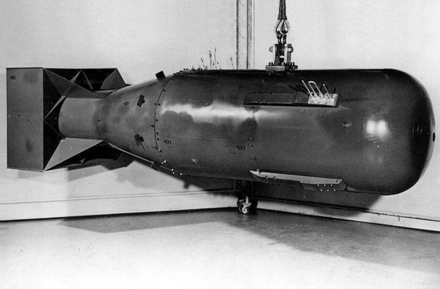
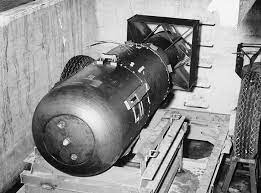

Chapter I: The Discovery of Fission
In December 1938, in the culmination of over 40 years of research and experimentation across the world, Otto Hahn and Fritz Strassmann discovered the process of nuclear fission, a discovery that would change the course of history forever.
Understand that an atom is essentially a core of protons and neutrons, surrounded by a cloud of electrons. Elements are defined by the number of protons in their core, or nucleus; for example, hydrogen contains one proton, helium contains two, etc, etc. Some elements, such as uranium or radium, are radioactive, meaning that their nucleus is unstable and periodically shoots out particles, a process called radioactive decay.
Scientists in the 1930s were greatly interested in radioactivity and atomic physics in general. To learn more about the atom, scientists would shoot protons at various elements and observe the effects that they had on the elements. However, since protons have a positive charge, they were repelled by the positive protons in the atom’s nucleus, making advances difficult.
In 1934, Enrico Fermi began bombarding atoms with neutrons instead of electrons, correctly theorizing that the uncharged particles would pass into the atom with no resistance. He and his colleagues tested 63 known elements and produced 37 new ones. However, when Fermi bombarded uranium, scientists disagreed on what the product was. Some thought they were new, “transuranic” elements, while some noticed that the chemical properties of the products matched those of lighter elements.
Hahn and Strassmann were building on Fermi’s earlier work that fateful December when they unexpectedly found that when bombarded by a neutron, uranium split into two barium atoms, as well as some stray neutrons. Even more unexpectedly, the pieces weighed less than the original piece of uranium, meaning that some of the mass of the uranium atom had been converted to an extraordinary amount of energy according to Einstein’s mass-energy equivalence formula.
Additionally, the stray neutrons released by the uranium when it split could, in turn, split even more uranium atoms, leading to a chain reaction. Should such a reaction happen fast enough, it would be the most powerful bomb ever built by humanity by orders of magnitude. While some thought that a chain reaction was infeasible, it remained a fact that fission had been discovered within Nazi Germany, and that such a bomb falling into Hitler’s hands would be disastrous.
Fermi and a fellow scientist, Leo Szilard convinced famous and widely influential physicist Albert Einstein to write Franklin Delano Roosevelt about the possibility of a nuclear bomb. FDR acted quickly, appointing Lyman J. Briggs to the head of the Advisory Committee on Uranium, marking the beginning of the Manhattan Project.
Chapter II: The Beginning of the Manhattan Project
The course of action was clear after President Roosevelt read Einstein's letter. Since uranium-235 was much more fissionable compared to uranium-238, the scientists had to find a way to purify and refine naturally occurring uranium ore, which contains mostly U-238, into U-235. Since the isotopes differ by only three neutrons of mass, separation would be extremely costly and difficult.
There were four chief methods of separation conceived by scientists:
- By centrifuge: A tube of liquid uranium would be placed into a device that would spin very quickly around, forcing the heavier U-238 to the bottom of the sample, and leaving the lighter U-235 at the top.
- By diffusion: U-235 gas passes through membranes more easily than U-238 gas. By repeatedly diffusing uranium hexafluoride gas through a series of membranes, it would be possible, though expensive, to get a very pure sample of U-235.
- By calutron: Charged particles of U-235 are deflected more by an electromagnetic field than charged particles of U-238. The machine used to generate the particles and magnetic field was called a calutron.
- By convection: Using a special heating and cooling system, it was possible to heat uranium hexafluoride liquid in such a way that it moves to the top of a tube.
Even if these four methods could supply a sufficient amount of uranium, scientists had no idea how to cause a chain reaction in that uranium. Enrico Fermi and Leo Szilard were working on that issue at the University of Colombia, where they were building a primitive nuclear reactor, called a "pile." Their theory was that a source of slow neutrons, supplied by a radioactive element, could induce a chain reaction in a pile (hence the name) of uranium. Their chief breakthrough was the use of graphite, which could slow down neutrons, making fission more likely.
Producing a pile was made even more important after the discovery of plutonium by Glenn Seaborg in 1941. Seaborg found that when hit by a neutron, instead of splitting like U-235, U-238 would change into neptunium. In turn, the neptunium would quickly undergo radioactive decay and turn into plutonium. Plutonium, Seaborg, showed, was around 1.7 times more fissionable compared to uranium. Even better, it was produced by the readily available U-238, as opposed to the extremely rare U-235. And since neptunium could be produced in large quantities in a pile, if Fermi and Szilard succeeded, they would double the speed at which a bomb could be made.
In 1940, Roosevelt moved the Advisory Committee on Uranium under the wing of the National Defense Research Committee, which was headed by Vannevar Bush. Soon after, the organization was restructured again, with Bush becoming director of the Office of Scientific Research and Development, the NDRC transferred under the control of the OSRD, and president of Harvard University James Conant assuming control of the NDRC.
Despite being disappointed by two consecutive reports opining that an atomic bomb would not be ready before 1945, Bush received a report from the MAUD Committee in Europe, which remained optimistic that a U-235 bomb could be produced in as little as two years. They estimated that the required critical mass for a large bomb was a mere 10kg. Despite bringing hopeful news, the MAUD Report also reminded all American scientists that in the 3 years since the discovery of fission, Nazi Germany had already begun an atomic bomb program. It was also possible that the MAUD Committee was the first alert to Soviet spies about nuclear power.
With the MAUD Report in hand, Vannevar Bush pitched the atomic bomb program to President Roosevelt. Roosevelt told Bush to proceed as quickly as possible through the research stage, but not to begin production without his authorization. The President also offered to fund the project as well as contact the upper circles of the British government for help. However, it was only in December, after the bombings of Pearl Harbor, that FDR would finally take action.
Chapter III: The Construction of the Bombs
With Pearl Harbor destroyed, defeats in the Pacific, and Europe under Nazi control, building a bomb was more important than ever before. The government decided to pursue all methods of isotope separation as well as plutonium production in piles, and also decided that for maximum security and efficiency, the Manhattan Project should be placed under Army control. To this end, the government appointed General Leslie R. Groves, a respected Army engineer, to head the Manhattan Project.
Groves quickly secured a site in Tennessee for uranium production and moved the Manhattan Project to top priority. Following the advice of prominent physicist J. Robert Oppenheimer, he selected Los Alamos, New Mexico, as the location of a top-secret laboratory for research on bomb design.
A breakthrough happened in December 1942 when Enrico Fermi led scientists to make the first controlled nuclear chain reaction at the University of Chicago. After this large milestone, funds were distributed more freely, and the project advanced quickly. Uranium and plutonium construction facilities were built in Tennessee, Oak Ridge, and Hanford, Washington. The actual assembly and research on bomb structure were done at Los Alamos, New Mexico, where the main construction plant was located.
Late in 1944, Los Alamos began to transition from research to development and bomb manufacturing. Increased production at Oak Ridge and Hanford seemed to indicate that there was enough plutonium and enriched uranium to generate at least one bomb. As the European front continued to progress in favor of the Allies, the top atomic target was swapped from Germany to Japan. Evidence revealed by the ALSOS mission in November 1944 indicated that Germany's atomic program had not proceeded beyond preliminary research stages.
Despite this positive evidence, ongoing issues hampered Robert Oppenheimer's efforts to complete the bomb design. The most pressing of these were ongoing personnel shortages, particularly among physicists, and supply shortages. The procurement procedure, which was designed to maintain the Los Alamos project's secrecy, resulted in irritating delays. The loss of touch between the far-off laboratory and its supply sources only worsened the problem.
Los Alamos produced two bomb types, a gun-type uranium bomb, and an implosion-type plutonium bomb. The uranium bomb, nicknamed "Little Boy," consisted of two pieces of uranium and explosive material. Upon detonation, the explosive material would send one piece of uranium flying down a narrow barrel into the other piece, forming a critical mass and causing an explosion. This same design couldn't work for plutonium, since it fissioned so fast that the explosion would blow the plutonium apart before it could all fully react, resulting in a fizzle rather than a reaction. To solve this, the engineers at Los Alamos devised a spherical layer of explosives that would compress a central core of plutonium into a critical mass.
The weapon plan for the uranium firearm-type bomb was frozen in February 1945. Since the design was widely believed to be foolproof, and there was only one uranium-type bomb available, a pre-war test was deemed useless.
The bombs had to be physically constructed at Los Alamos, which was primarily dependent on the skill of the chemists and metallurgists to transform the uranium and plutonium into metal and shape it into the precise shape and size. Plutonium provided a significantly greater challenge, as it was exceedingly toxic and existed in several stages depending on temperature. Chemists and metallurgists were under extreme pressure to develop precise ways for processing plutonium just before it arrived in large quantities in May. The American bomb project progressed from questionable to probable over the nine months between July 1944 and April 1945 as a result of advances on metallurgical and chemical modifications on plutonium that boosted implosion's chances. The "Little Boy" uranium bomb delivery date of August 1 appeared to be more likely than it had been.


Chapter IV: The Detonations over Japan
The Trinity Test
The nuclear bombs were complicated machines, and there was no guarantee that they would work. Even if they did, there was no reliable way to estimate the power of something which had never occurred on Earth before. Some Los Alamos experts continued to have doubts that the bomb would operate at all. Others believed that a detonation would ignite the nitrogen in the atmosphere. Manhattan Project leaders decided to conduct a test of the more risky plutonium weapon.
The Trinity test was conducted on the Alamogordo Bombing Range far south of Los Alamos. location. To test the resilience of measurement equipment, a large amount of conventional explosives was detonated around them. Preparations began in May and continued until July. The goals of the test were to measure radiation, yield, power, and properties of the blast and fireball.
As the time of the explosion drew closer, most onlookers laid down on the ground with their feet towards the Trinity site and waited. Most wore sunglasses to shield them from the UV light. Richard Feynman remained behind a darkened windshield. All the members of the project were more nervous than they had ever been in their lives. James Conant remarked that he never knew that ten seconds could take so long.
On Monday, July 16, 1945, 5:30 a.m, the explosives around the bomb were detonated, focusing a shockwave onto the plutonium core that triggered a massive chain reaction. The energy released by the plutonium created a fireball which engulfed the detonation tower and fused the desert sand into a green glass. In the first few seconds, the fireball was purple, a color brought on by ionized particles of air releasing energy in the form of light. It soon faded to red, and a mushroom cloud began rising from the desert.
J. Robert Oppenheimer, looking at his creation, later remarked that it reminded him of a piece of Hindu scripture: "Now I am become Death, destroyer of worlds." And thus did the Atomic Age begin.
The bombing of Hiroshima
After careful consideration and calculation, the military concluded that a potential invasion of the Japanese mainland could cost over 1 million American lives. Because of this, President Truman authorized the use of an atomic bomb over Japan. The two targets chosen were Hiroshima and Kokura. On August 6th, 1945, Paul Tibbets took off on the bomber Enola Gay and ascended to an altitude of 31,000 feet above Hiroshima. He dropped Little Boy at 8:15, marking the first and penultimate use of atomic weapons in warfare.
The bomb was detonated directly over a field where Japanese soldiers were doing exercises. Those who were unlucky (or lucky) enough to be directly inside the fireball were vaporized instaneously. Anything flammable within 6 thousand feet burst into flame immediately, lit by the radiation released by the bomb. That same radiation bleached the walls and ground white, leaving eerie shadows where people had absorbed the radiation instead.
T The death toll of the Hiroshima bombing remains hard to estimate. Around 70,000 people died as a result of burns, vaporization, fires, and the shockwave. The effects of radiation and fallout raised that number above 100,000 before the end of 1945. More long term effects, such as cancer, likely claimed a hundred thousand more. Yet Japan proved unwilling to surrender, necessitating yet another bombing.
The bombing of Nagasaki
Charles Sweeney, pilot of Bock's Car, took to the skies with Fat Man loaded into the bomber. When he arrived at the primary target, Kokura, he was dismayed to find that it was covered with clouds. Without visual confirmation of the target, he was forced to move to the secondary target, Nagasaki, which was also covered with clouds. However, a last minute visual confirmation led to the dropping of Fat Man over Nagasaki, with a yield of 21 kilotons, 40% more than Little Boy.
Even with this higher yield, Fat Man did less damage to Nagasaki due to the unique geography and layout of the region. The blast was largely confined to a hilly region of Nagasaki, of which a large portion was water. Despite this, most of the city was leveled within a 1-mile radius. The death toll, again, is hard to estimate, but roughly 40,000 were killed in the first day, with a death toll of roughly 140,000 in the coming years. Emperor Hirohito overruled his council of war and forced them to accept unconditional surrender, citing the enemy's use of "cruel bombs."
Chapter V: Aftermath
The atomic bombs marked the end of WWII, but at what cost? Let us begin at the casualities. If we factor in long-term deaths, the total death toll of the two bombs is around 350,000 people, not to mention the two cities that were wiped off the map. Of course, an American invasion would likely have taken far more lives, but what is 350,000 Japanese civilians against millions of American soldiers? At least, that's what the leaders thought.
The peace that the bombs brought were short-lived. The spies who stole the bomb's secrets, among them Harry Gold and Klaus Fuchs, led to the Soviet Union developing atomic bombs shortly afterwards. In fact, when Truman told Stalin about the bomb, Stalin had already heard from his spies and had to act surprised. This end to American nuclear monopoly led to an arms race during the Cold War, during which the world sometimes woke up relieved to remain intact. As Bertrand Russell put it, "War does not determine who is right - only who is left."
Since most countries are smart enough not to commit suicide, the greatest threat today lies within nuclear terrorism. A nuclear bomb, after all, is not all that hard to build. The challenges faced by the Manhattan Project were the challenges of pushing across a frontier, to do what had never been done before. Papers on the Manhattan Project are widely available, and it would only take a single, well-funded terrorist collective a couple of years to build a crude bomb theirselves. Certainly, a multi-billionaire such as Elon Musk could do it. According to NUKEMAP by Alex Wellerstein, a 10kt bomb could easily take over 100,000 lives if detonated in New York, not taking into account fallout and the subsequent economic crisis.
Yet the Manhattan Project brought something better than the promise of all-consuming nuclear war. It brought with it massive scientific discovery and the power of the atom, which we still harness today in the form of nuclear power plants. And despite the accidents at Fukushima, Chernobyl, and Three Mile Island, nuclear power remains far more safe than fossil fuels. The future of humanity may very well rely on nuclear energy. Would such developments have come without a world war? Maybe, but without a doubt they would come fewer and far between.
Whether the Manhattan Project was evil or not is not in the scope of this article to discuss. Did it cause evil? Certainly. Did it cause good? Certainly. Science is not good or bad. Science is a key. And keys do what the hands holding them will.
About
This website was made by Nithin Vinothkumar and Peter Gong, in 8th grade, 2022, for Mrs. Kathryn Peterson's American History II class. By no means is it a credible source, and you should not take it as such. Please see our bibliography for sources we used. Additionally, we would like to express our thanks to the work of the people at osti.gov, from which much of the information from this article is drawn, as well as Alex Wellerstein's fantastic resource NUKEMAP.
Bibliography
View Bibliography
Repository
You can find the open-source source code at our Github repository.